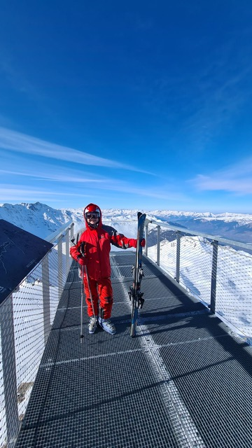

Natalia
I live in Ottignies - Louvain-la-Neuve, and I am of the Slovak nationality.
Profession and studies
My profession change occurred after the long career in European affairs and public administration. There I discovered my interest in technological development. I decided to switch the sector, when I discovered manual testing. I am continuously as I have no IT background. I pursued my MSc in Business Management in Slovakia, and a few years later I accomplished MA in International Relations in the United Kingdom.
Interests
- Exploratory testing and bug hunting
- International Politics
- Loving mountains and skiing 
- Enjoying the natural sceneries and playing golf